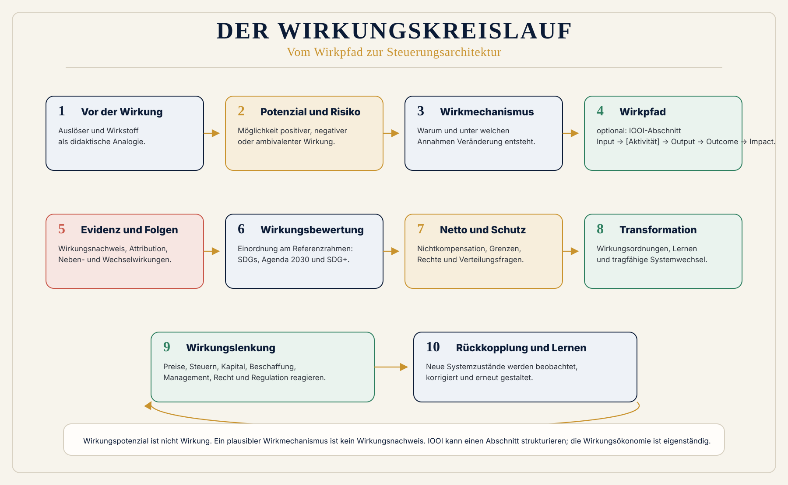

1. Wirkung ermitteln
Was verändert sich tatsächlich?
Vorwirkung, IOOI, Wirkungsempfänger, Raum, Reichweite, Dauer, Zurechnung, Nebenfolgen und Datenqualität machen den Wirkpfad prüfbar.
 Wirkungsökonomie
Wirkungsökonomie
Methodenarchitektur
IOOI erklärt, wie aus Ressourcen Leistungen, Veränderungen und breitere Wirkungen entstehen können. Die Wirkungsökonomie verbindet diesen Pfad mit einem transparenten Maßstab, Schutzregeln und Konsequenzen für die nächste Entscheidung.
Die Kurzformel
Wirkung ist die tatsächliche Veränderung von Zuständen. Sie kann positiv, negativ oder neutral sein. Die Wirkungsökonomie bewertet Wirkung am Referenzrahmen der SDGs, der Agenda 2030 und SDG+ und richtet Wirtschaft, Politik, Kapital, Medien und Entscheidungen auf positive Netto-Wirkung für Mensch, Planet und Demokratie aus.
Nicht alles, was wirkt, ist erwünscht. Deshalb reicht es nicht, Wirkung zu messen. Man muss auch offenlegen, woran man sie misst.
Lernende Gesamtarchitektur
Die Treppe erklärt einen Pfad. Das Wirkungsrad erklärt ein lernendes System: Eine Entscheidung verändert den Systemzustand, der wieder zur Ausgangslage der nächsten Entscheidung wird.

1. Wirkung ermitteln
Vorwirkung, IOOI, Wirkungsempfänger, Raum, Reichweite, Dauer, Zurechnung, Nebenfolgen und Datenqualität machen den Wirkpfad prüfbar.
2. Wirkung bewerten
Agenda 2030, SDGs und SDG+ geben die Richtung an. Fachstandards, Recht und wissenschaftliche Schwellen können sie konkretisieren.
3. Wirkung rückkoppeln
Bewertete Wirkung verändert Preise, Steuern, Kapital, Förderung, Beschaffung, Management, Haushalt und Regulierung.
Vor der Wirkung beginnen
Die Wirkungsökonomie beginnt nicht erst dort, wo Wirkung eingetreten ist. Sie trennt sorgfältig den Raum möglicher Wirkung von der späteren Feststellung tatsächlicher Veränderung.
Handlung, Unterlassen, Produkt, Gesetz, Preis, Narrativ, Technologie, Kapitalfluss oder Ereignis.
Didaktische Analogie für einen Auslöser mit Wirkungspotenzial, nicht Wirkung selbst.
Möglichkeit, dass positive, negative, neutrale oder ambivalente Wirkung entsteht.
Möglichkeit negativer, unerwünschter oder systemisch destabilisierender Wirkung.
Plausible Erklärung, wie eine Veränderung entstehen kann. Noch kein Kausalbeweis.
Für Medien, Sprache und Politik gilt besondere Vorsicht: Ohne empirischen Nachweis sprechen wir von Wirkungspotenzial, Wirkungsrisiko, Wirkmechanismus, Resonanzraum oder Wirkpfad – nicht von gesicherter Wirkung.
IOOI-Wirkpfad
IOOI steht für Input, Output, Outcome und Impact. Es beschreibt den Weg von eingesetzten Ressourcen über erbrachte Leistungen zu eingetretenen Veränderungen und höherstufigen Wirkungen. Aktivität gehört logisch zwischen Input und Output, ist aber kein Buchstabe im Akronym.
| Stufe | Frage | Beispiele | Klare Abgrenzung |
|---|---|---|---|
| Input | Welche Ressourcen werden eingesetzt? | Geld, Zeit, Personal, Material, Energie, Infrastruktur, Wissen, Daten, natürliche Ressourcen. | Ressourceneinsatz, noch keine Wirkung. |
| Aktivität | Was wird tatsächlich getan? | Projekt, Produktion, Dienstleistung, Gesetz, Kommunikation, Investition, Förderung oder Beschaffung. | Handlung zwischen Input und Output. |
| Output | Welche direkte Leistung entsteht? | Produkte, Beratungen, Kurse, Infrastruktur, Reichweite, Teilnehmende, bereitgestellte Dienste. | Output ist noch nicht automatisch Wirkung. |
| Outcome | Was verändert sich bei Betroffenen oder in Systemen? | Wissen, Fähigkeiten, Verhalten, Gesundheit, Lebenslage, Zugang, Sicherheit, Vertrauen, Ressourcenverbrauch. | Outcome ist bereits eine Wirkungsebene. |
| Impact | Welche breiteren oder längerfristigen Wirkungen entstehen? | Gesellschaftliche, ökologische, institutionelle oder Marktveränderungen. | Nicht automatisch positiv; fachfeldabhängig genauer definieren. |
IOOI braucht ein Ziel. Es enthält keinen eigenen verbindlichen normativen Referenzrahmen. Anwenderinnen und Anwender müssen offenlegen, welche Outcomes und Impacts sie anstreben und woran sie diese bewerten.
Wirkung verstehen
IOOI lässt sich durch etablierte Evaluations- und Impact-Management-Fragen vertiefen. Sie klären, was tatsächlich entstanden ist – für wen, wo, wie stark, wie lange und wodurch.
Wirkungsempfänger, unsichtbare Betroffene, Generationen, Ökosysteme, Institutionen, Wirkungsraum und Lieferkette sichtbar machen.
Reichweite, Intensität, Dauer und Wirkungsordnungen prüfen. Eine große Reichweite ist nicht automatisch eine starke Veränderung.
Baseline, Counterfactual, Attribution, Kontribution, Datenqualität, Unsicherheit und Wirkungsrisiko offenlegen.
Nebenwirkung, Wechselwirkung, Displacement und Rebound erfassen. Positive Teilwirkungen können erhebliche Schäden nicht unsichtbar machen.
Rückkopplungen, Lernprozesse, Systemfolgen, Lock-ins und Spillover machen aus einer linearen Kette ein Wirkungsnetz.
Modellwerte, Proxies, Schätzungen und Evidenzlücken sichtbar halten. Zurechnung ohne Scheingenauigkeit ist besser als falsche Präzision.
Wirkung bewerten
Eine Desinformationskampagne kann wirksam sein. Ein suchtverstärkendes Geschäftsmodell kann wirksam sein. Ein fossiles Produkt kann wirtschaftlich erfolgreich sein. Wirksamkeit allein beantwortet deshalb nicht, ob eine Entwicklung gesellschaftlich erwünscht ist.
Wirkungsermittlung: Daten, Wirkpfad und Evidenz.
Referenzrahmen: Agenda 2030, SDGs, SDG+ und passende Fachreferenzen.
Positiv, neutral oder negativ – transparent begründet.
Netto-Wirkung unter Berücksichtigung von Risiken, Verlagerungen und Nebenfolgen.
Wirkungsgrenzen und Nichtkompensation schützen vor Schönrechnung.
Transformationsprüfung und Rückkopplung in die nächste Entscheidung.
Die SDGs sind ein außergewöhnlich breit international vereinbarter Zielrahmen. SDG+ ist die transparente WÖk-Erweiterung für systemische Voraussetzungen wie Demokratie, Rechtsstaatlichkeit, Informationsqualität, digitale Selbstbestimmung, institutionelles Vertrauen und Resilienz. Fachstandards wie ESRS, GRI, ISO, ILO, gesetzliche Grenzwerte und wissenschaftliche Schwellen liefern Daten, Messgrößen und operative Konkretisierung; sie sind nicht automatisch der normative Oberrahmen.
Netto-Wirkung und Schutz
Netto-Wirkung ist keine einfache Addition. Sie führt positive und negative Wirkungen unter Berücksichtigung von Grenzen, Unsicherheit, Nebenfolgen und Nichtkompensation zusammen.
Menschenwürde, Kinder- und Zwangsarbeit, schwere Gesundheitsgefahren, irreversible ökologische Schäden, Biodiversitätskipprisiken und Rechtsstaatsabbau sind nicht beliebig verrechenbar.
Ein schweres Defizit in einem zentralen Wirkungsfeld darf nicht durch gute Werte an anderer Stelle unsichtbar gemacht werden.
Sie prüft, ob Regeln, Standards, Anreize, Märkte, Institutionen oder Handlungspfade dauerhaft verändert werden.
Faire Einordnung
Die Ansätze erfüllen unterschiedliche Aufgaben. Die WÖk beansprucht nicht, IOOI, Theory of Change oder Impact Management zu ersetzen.
| Frage | IOOI / Wirkungstreppe | Wirkungsökonomie |
|---|---|---|
| Hauptzweck | Wirkpfad strukturieren. | Wirkung ermitteln, bewerten und rückkoppeln. |
| Input, Output, Outcome, Impact | Ja. | Ja, als Teil der Wirkungsermittlung. |
| Baseline, Attribution, Kontribution | Je nach Anwendung ergänzbar. | Explizite Evidenzfragen. |
| Negative und unbeabsichtigte Wirkung | Integrierbar. | Systematisch mitzuerfassen. |
| Normativer Rahmen | Vom jeweiligen Anwender festzulegen. | Agenda 2030, SDGs, SDG+ sowie offen ausgewiesene ergänzende Referenzen. |
| Netto-Wirkung und Schutz | Kein Kernbestandteil des Akronyms. | Wirkungsgrenzen, Nichtkompensation und Reverse Merit Order als Schutzlogik. |
| Rückkopplung | Projektlernen und Management sind möglich. | Bewertung wird systematisch in Preise, Steuern, Kapital, Förderung, Beschaffung, Haushalt, Management und Regulierung zurückgeführt. |
Drei Anwendungsbilder
Bildungsprojekt
IOOI: Budget, Team und Lernplattform ermöglichen Kurse und Teilnahmen. Kompetenz- und Teilhabeveränderungen sind Outcome; langfristige Bildungs- und Arbeitsmarktfolgen können Impact sein.
WÖk: Wer wurde erreicht, was wäre ohnehin passiert, wie dauerhaft ist der Effekt und welche Bedeutung hat er für SDG 4, SDG 8 und SDG 10? Daraus folgen Budget-, Skalierungs- und Bildungspolitikentscheidungen.
Produkt: Apfel
IOOI: Wasser, Fläche, Arbeit, Energie und Material führen zu einem verkaufsfähigen Produkt. Nutzung und Produktion haben Folgen für Einkommen, Ernährung, Ressourcen und Gesundheit.
WÖk: Scorecard, WÖk-IDs, Benchmarks und Schutzregeln prüfen Lieferkette, Wasserstress, Biodiversität, Klima und Arbeitsbedingungen. Die Bewertung kann Preis- und Beschaffungsentscheidungen verändern.
Desinformation
Vorwirkung und IOOI: Budget, Inhalte, Bots und Plattformmechaniken erzeugen Views, Shares und Kommentare. Ob sich Überzeugungen oder Vertrauen verändern, ist eine eigene Evidenzfrage.
WÖk: Plausible demokratische Wirkungsrisiken werden am Referenzrahmen geprüft. Erst bei belegter Veränderung wird von eingetretener Wirkung gesprochen; daraus können Transparenz-, Medien- und Plattformregeln folgen.
Methodenkarte
Wie führen Ressourcen über Leistungen zu Veränderungen und höherstufiger Wirkung?
Warum und unter welchen Annahmen, Kontexten und Mechanismen sollte dieser Wirkpfad funktionieren?
Was verändert sich, wer ist betroffen, wie viel, welchen Beitrag leistet die Organisation und welches Risiko besteht?
Welche gesellschaftlichen Werte sind monetarisierbar, und welche Netto- und Transformationswirkung wird zusätzlich sichtbar?
Welche Daten, Kennzahlen und Offenlegungen stehen für Berichterstattung und Steuerung zur Verfügung?
An welchem transparenten Ziel- und Referenzrahmen wird Wirkung eingeordnet?
Wie werden Wirkpfad, Evidenz, Maßstab, Bewertung, Schutzregeln, Transformation, Governance und Rückkopplung verbunden?
Wie fließen Daten und Bewertungen in Strategie, Investitionen, CAPEX, OPEX, Produktentwicklung, Lieferkette und Beschaffung?
Weiterlernen
IOOI, Input, Output, Outcome, Impact, Wirkungstreppe, Referenzrahmen und Wirkungsbewertung sind miteinander verknüpft.
IOOI im GlossarVom Projektmodell über die Evidenz zur Scorecard und Managemententscheidung.
Impact-Controlling ansehenLernpfad zu Wirkung, Evidenz, Referenzrahmen, Nichtkompensation und Rückkopplung.
Lernpfad ansehenQuellen: OECD DAC: Glossary of Key Terms in Evaluation and Results-Based Management, Impact Frontiers: Five Dimensions of Impact, PHINEO: Grundbegriffe der Wirkungsorientierung, Bertelsmann Stiftung: Die iooi-Methode und Vereinte Nationen: Agenda 2030. Die WÖk-spezifische Einordnung steht im Glossar und im führenden Begriffsleitfaden.